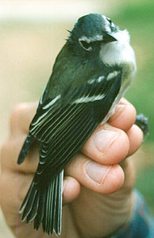

| These photographs accompany records that have been recently submitted to the committee. This record
has been ACCEPTED.  Blue-headed Vireo Vireo solitarius 28 Sep. 1998, Big Sur River Mouth, MTY 1999-057 © 1998 Jim Booker Back to CBRC Rare Bird Photos |